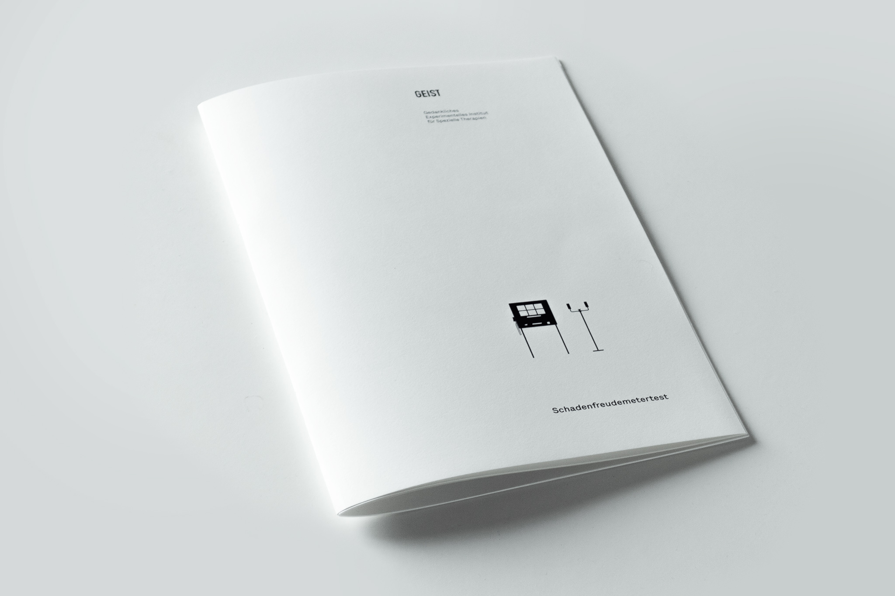
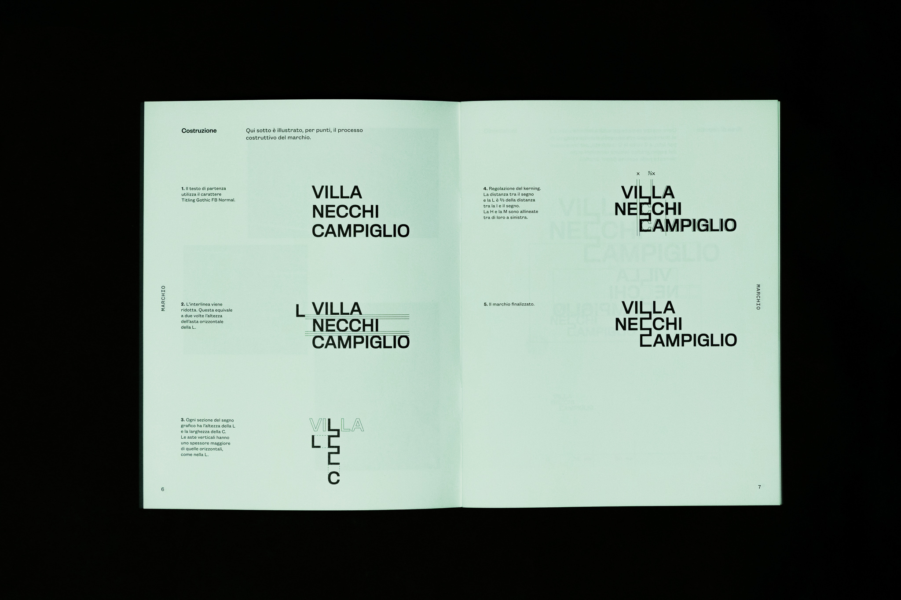
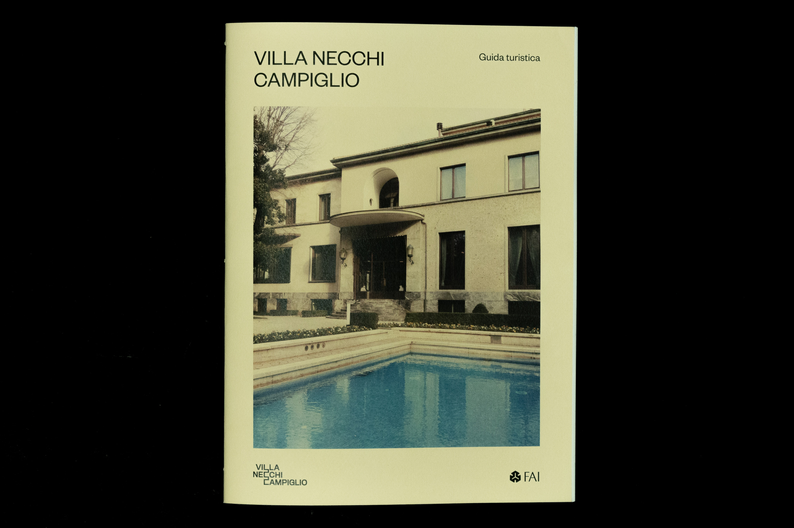
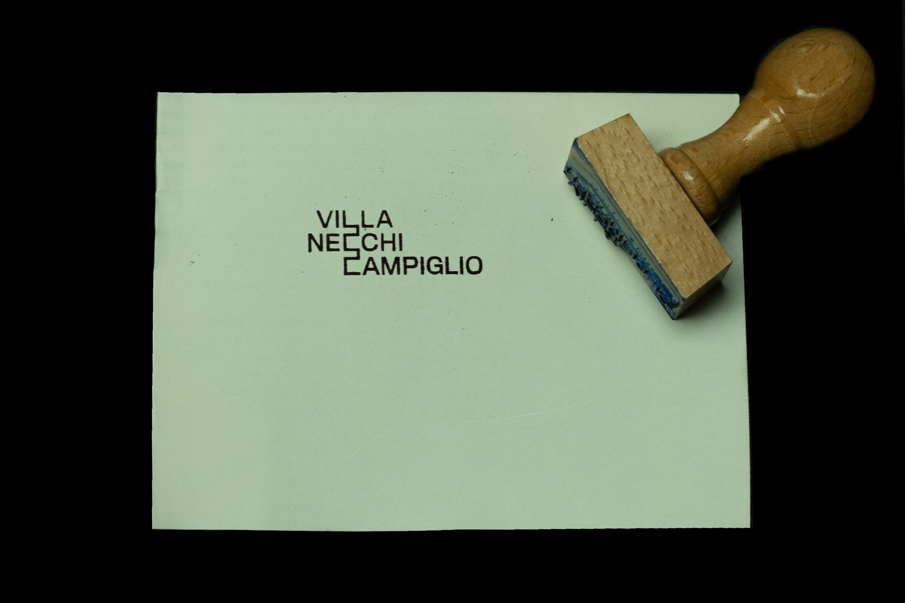

Hi, I’m Lorenzo Bernini (not this one,
but this one), a Communication Design student at Politecnico di Milano.
I’m interested in everything that allows me to tell a story using images and over the years I have cultivated this passion through various means,
such as filmmaking, graphic design, 2D and 3D animation.
lorenzobernini98@gmail.com
Vimeo | YouTube | Behance
3D Short Film
Politecnico di Milano
2020
Soli is a 17 minutes short film that tells the story of some people who have lost the habit of communicating and staying together, developed during the
2020 Italy's spring lockdown.
Made in 3D with Blender, I was responsable for every step of the creative process, from pre-production (screenwriting, storyboarding, concept art), to
production (modeling, shading, retopology, animation, directing, lighting) and post-production (editing, sound, color correction).
A detailed report of the work is available on the project website.
Collaborators:
Gianluca Locatelli, Filippo Testa.
2D/3D Short Film
Politecnico di Milano
2020
During the course of a five days workshop, we were asked to realize a short video targeted towards young teenagers.
We came up with an animated short that aims to raise awareness on mental health, through a visual metaphor.
After coming up with the concept and drawing the storyboard, I realized the environment and the lighting for the forest in 3D with Blender.
The 2D animated fireflies and the 3D background come together thanks to the lighting, driven by the 2D characters, but rendered in the 3D environment.
Collaborators:
Alessia Arosio, Emanuele Coppo, Gianluca Locatelli, Enrico Monasteri, Filippo Testa.
Booklet
Politecnico di Milano
2020
La dignità delle piramidi (The dignity of pyramids) is a short booklet that collects some reflections on the work of Bernd
and Hilla Becher, two of the most influential photographer of the 20th century. In the second part of the book the photographs
are organized into categories of buildings (typologies), following the duo’s distinctive archival structure.
Installation
Politecnico di Milano
2019
Schandefreudemetertest is an interactive experience that takes place thanks to a machine, consisting of six screens, an eye-tracker and a printer.
The experience resembles a scientific test, whose purpose is to make people think about human morbidity and especially about the concept of schadenfreude (the pleasure driven by others’
misfortunes), in its multiple emotional and social implications. The volunteer rests his chin on a special support and watches a series of videos
on the screens, one of which concerns the death of one or more people. If the attention lingers long enough on the violent video, another
screen will start broadcasting death videos and so on. The eye-tracker records the subject's attention shifts and returns a printed report, where a
graph and other data, illustrate the result of the test.
To learn more, visit the project website geistlab.de,
or the Instagram page @geist.lab.
The project was featured as a case study on speculativeedu.eu,
an international platform collecting advances in Speculative Design research and applications.
Collaborators:
Alessia Arosio, Emanuele Coppo, Enrico Monasteri, Filippo Testa.

Brand Identity
Politecnico di Milano
2019
We were asked to develop a new visual identity for Villa Necchi Campiglio, a 1930s modern villa-museum in the heart of Milan. Everything started with the
trademark, inspired by the strong and geometric shapes of the architecture, designed by Piero Portaluppi. Then we evolved the original idea into a series
of artifacts (stationery, merchandise, wayfinding, website) to generate a complete system.
As part of the promotional campaign, we realized a series of short videos, each dedicated to a particular section of the villa.
Collaborators:
Alessia Arosio, Camilla Baldi, Emanuele Coppo, Filippo Testa.
  


Video Essay
Politecnico di Milano
2019
Once Upon a Time in the Web explores the evolution of freedom of expression on the internet. From the early days of the world wide web
a lot has changed in terms of content censorship, mainly because of economic reasons. The video illustrates, through a visual and
narrative metaphor (the end of the Old Wild West), the shift that is taking place.
I was responsible for the research, the writing,
the editing and the animations in the video.
Collaborators:
Alessia Arosio, Camilla Baldi, Emanuele Coppo, Gianluca Locatelli, Pietro Martina, Filippo Testa, Chiara Ribolzi (narrator).
Commercial
Politecnico di Milano
2018
Airbnb Voice is a fictional brand extension of Airbnb, that allows the host to provide useful information and
insight about the house to the guest, trough a Google Nest (ex Google Home).
After developing the user experience, realizing
the visual communication and a functional prototype, I wrote and directed this short commercial to advertise this new service in a funny way.
Collaborators:
Alessia Arosio, Camilla Baldi, Emanuele Coppo, Filippo Testa, Melissa Di Cianni (actress), Fabio Ravasi (actor).
Short Film
Politecnico di Milano
2018
The brief for this university project was to choose a common theme in art and tell it through a specific filmic style.
We chose to tell a story about beauty, through the eyes of Mario Bava, Dario Argento and Nicolas Winding Refn.
Collaborators:
Alessia Arosio, Emanuele Coppo, Melissa Di Cianni (actress), Giulia Da Col Sortini (actress).
Magazine + Video Essay
Politecnico di Milano
2018
A monographic magazine issue about Paul Rand, world famous American graphic designer, one of the fathers of modernism. His vast work is analyzed
through four thematic chapters, each dedicated to a different area: editorial design, advertising, corporate identity and packaging design.
In addition, I realized a short video essay, based on an interview we had with Steven Heller, New York Times journalist and graphic design critic.
Collaborators:
Alessia Arosio, Emanuele Coppo, Filippo Testa.